Stats 101
Steph Locke
2017-09-03
Aim
Aim
- Predict the ages of SQL Saturday Exeter attendees
Our data
Our data
We have the results from our survey.
basedata<-setDT(read_excel(myFile))
results<-basedata[Age<100&Age>Experience,]Our sample has 30 records but with basic data cleansing we will be working with 28.
Results
DT::datatable(results)Age Distribution
ggplot(results)+ggopts+
aes(x = Age, y=..count..)+
geom_histogram(bins = 10, fill="white", colour="white")
Experience Distribution
vegalite %>%
add_data(results) %>%
encode_x("Experience","quantitative") %>%
encode_y("*", "quantitative", aggregate="count") %>%
bin_x(maxbins=10) %>% mark_bar()Field Distribution
vegalite %>%
add_data(results) %>%
encode_x("Field","ordinal") %>%
encode_y("*", "quantitative", aggregate="count") %>%
mark_bar()All data
vegalite %>%
add_data(results) %>%
encode_x("Experience","quantitative") %>%
encode_y("Age", "quantitative") %>%
encode_color("Field", "nominal") %>%
mark_point()Sampling
Training
vegalite %>%
add_data(training) %>%
encode_x("Experience","quantitative") %>%
encode_y("Age", "quantitative") %>%
encode_color("Field", "nominal") %>%
mark_point()Holdout
vegalite %>%
add_data(holdout) %>%
encode_x("Experience","quantitative") %>%
encode_y("Age", "quantitative") %>%
encode_color("Field", "nominal") %>%
mark_point()One size fits all
One size fits all
We could take some measure of central tendency to predict the age of attendees.
averages<-training[,.(Mean=floor(mean(Age))
,Median=floor(median(Age))
,Mode=Mode(Age)
)]
knitr::kable(averages)| Mean | Median | Mode |
|---|---|---|
| 35 | 36 | 30 |
Results
holdout[,colnames(averages):=averages]
holdout.m<-melt(holdout, measure.vars = c("Age",colnames(averages)))
vegalite %>%
add_data(holdout.m) %>%
encode_x("Name", "ordinal") %>%
encode_y("value", "quantitative") %>%
encode_color("variable", "nominal")%>%
mark_point()Assessing results
holdout.lse<-melt(holdout, measure.vars = colnames(averages))
holdout.lse[,Error:=(Age-value)^2]
knitr::kable(holdout.lse[,.(LSE=sum(Error)), variable][order(LSE)])| variable | LSE |
|---|---|
| Median | 732 |
| Mean | 791 |
| Mode | 1296 |
Line of best fit
Model
training[,expLMres:=expLM$fitted]
ggplot(training, aes(x=Experience, y=Age))+
geom_point()+
geom_line(aes(y=expLMres),colour="blue")+
theme_minimal()
Results
holdout[,expLMres:=predict(expLM,holdout)]
holdout.m<-melt(holdout, measure.vars = c("Age","expLMres"))
vegalite %>%
add_data(holdout.m) %>%
encode_x("Name", "ordinal") %>%
encode_y("value", "quantitative") %>%
encode_color("variable", "nominal")%>%
mark_point()Assessing results
holdout.lse<-melt(holdout, measure.vars = c("expLMres",colnames(averages)))
holdout.lse[,Error:=(Age-value)^2]
knitr::kable(holdout.lse[,.(LSE=sum(Error)), variable][order(LSE)])| variable | LSE |
|---|---|
| expLMres | 384.1351 |
| Median | 732.0000 |
| Mean | 791.0000 |
| Mode | 1296.0000 |
Complex linear regression
Complex linear regression
- \(y=m_1 x_1 +...+ m_n x_n +c\)
- Contrasts
fieldLM<-lm(Age~Experience + Field, training)
summary(fieldLM)
##
## Call:
## lm(formula = Age ~ Experience + Field, data = training)
##
## Residuals:
## Min 1Q Median 3Q Max
## -5.502 -4.634 -1.030 3.782 8.479
##
## Coefficients:
## Estimate Std. Error t value Pr(>|t|)
## (Intercept) 27.0115 2.7852 9.698 4.2e-08 ***
## Experience 0.3773 0.2151 1.755 0.0985 .
## FieldBI 6.6037 3.5386 1.866 0.0805 .
## FieldDBA 8.6789 3.7142 2.337 0.0328 *
## FieldOther 4.8284 3.7763 1.279 0.2193
## ---
## Signif. codes: 0 '***' 0.001 '**' 0.01 '*' 0.05 '.' 0.1 ' ' 1
##
## Residual standard error: 5.569 on 16 degrees of freedom
## Multiple R-squared: 0.5052, Adjusted R-squared: 0.3815
## F-statistic: 4.084 on 4 and 16 DF, p-value: 0.01812Model
training[,fieldLMres:=fieldLM$fitted]
ggplot(training, aes(x=Experience, y=Age, group=Field, colour=Field))+
geom_point()+
geom_line(aes(y=fieldLMres, group=Field),colour="blue")+
facet_wrap(~Field)+
theme_minimal()
Results
holdout[,fieldLMres:=predict(fieldLM,holdout)]
holdout.m<-melt(holdout, measure.vars = c("Age","fieldLMres"))
vegalite %>%
add_data(holdout.m) %>%
encode_x("Name", "ordinal") %>%
encode_y("value", "quantitative") %>%
encode_color("variable", "nominal")%>%
mark_point()Assessing results
holdout.lse<-melt(holdout, measure.vars = c("fieldLMres","expLMres",colnames(averages)))
holdout.lse[,Error:=(Age-value)^2]
knitr::kable(holdout.lse[,.(LSE=sum(Error)), variable][order(LSE)])| variable | LSE |
|---|---|
| expLMres | 384.1351 |
| fieldLMres | 470.5544 |
| Median | 732.0000 |
| Mean | 791.0000 |
| Mode | 1296.0000 |